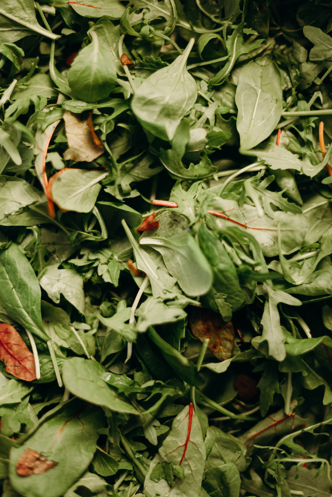
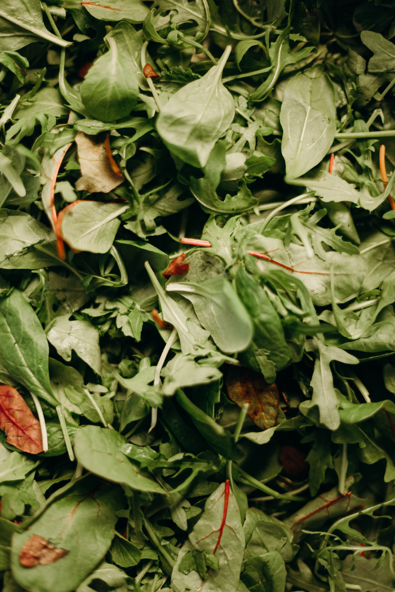
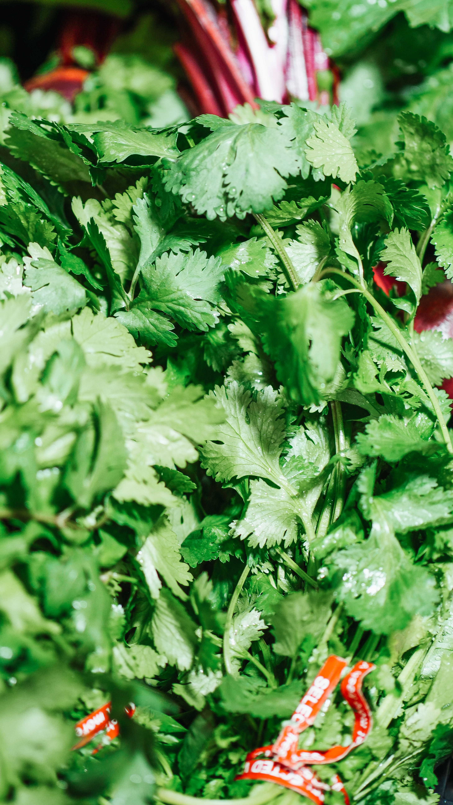
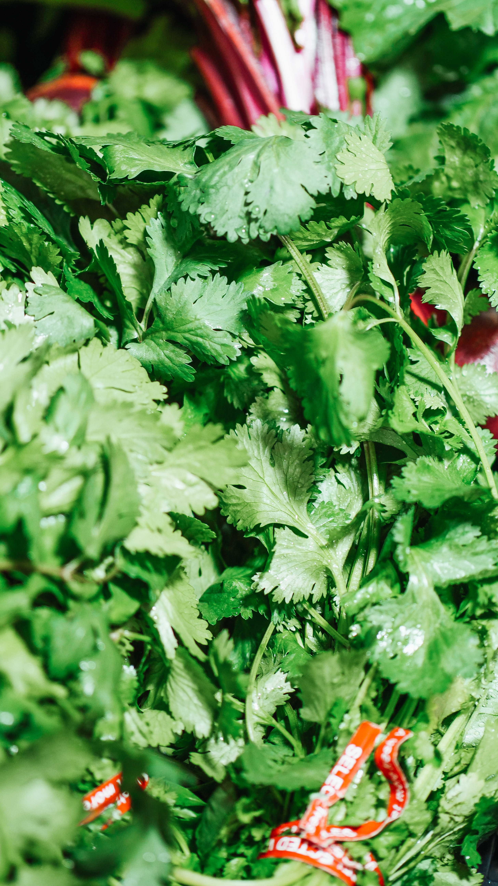
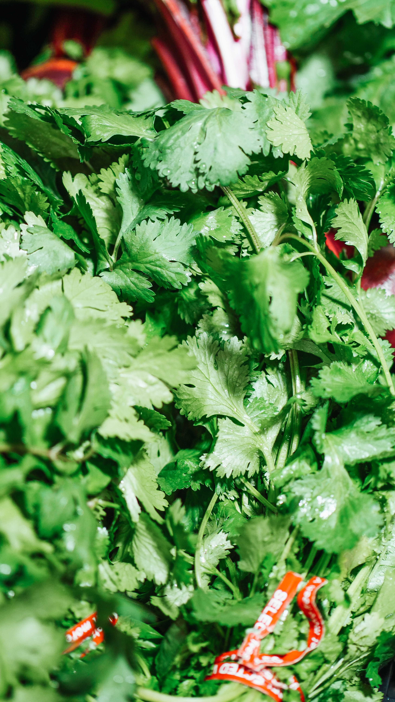

Green Vegetables
1.Spinach
 

Pre-harvest
Soil & Climate:
Spinach can be grown on any type of soil possessing good fertility and drainage but sandy loam soil is most suitable. Soil pH should be 6.5-7. Although spinach is a winter season crop, it can be grown throughout the year under mild temperature conditions
Cultivation-
Sowing Time:
The main sowing season in plains is from last week of August to second week of November. In hilly regions, it is sown from March-May.
Sowing Rate:
For winter crop, use 10-15kg seed/ha and for summer crop 25-30kg/ha seed is required. (Can be grown from both seed and seedlings)
Planting Distance: 5x20 cm
Food Formulations:
Apply 25 tons of farmyard manure per hectare at the time of soil preparation. Along with Natural Source of NPK
Maintenance:
One or two weeding should be given to keep the crop clean and healthy.
Water Management:
Keep soil consistently moist throughout the growing season. Apply 1st irrigation immediately after sowing. Subsequent irrigations may be given at an interval of 4-6 days during summer and 10-12 days during winter.
Companion: Beans, Carrot, Cabbage, Peas, Cauliflower
Plant Rotation: Tomato, okra, co, all fruits
Yield:
Start harvesting crop after 6-8 weeks of planting. Cut off outer leaves which are 3-4 inches long. It will encourage more plant growth and ultimately results in more foliage to harvest. The total yield of green leaves is 80-100 quintals per hectare.
Integrated Pest and Disease Management/Common issues:
Flea beetles, spider mites, slugs, and aphids are major pests. The two most common diseases are downy mildew (which may appear during cool, moist weather) and white rust. Treating the seeds with a registered chemical immediately before planting: by planting resistant cultivars; avoiding planting when the soil temperature is high; practicing 3-year crop rotation; and considering hot water treatment of the seed can control them.
Post- Harvest
The harvested crop is allowed to cool down as soon as possible. Spinach can be held 10 to 14 days at a temperature of 0°C and a relative humidity of 95% to 100%.
2. Fenugreek
Pre-harvest


Soil & Climate:
Fenugreek can be cultivated in wide varieties of soils with rich organic matter, however loamy soil with good drainage are best for fenugreek cultivation. The soil with a pH value of 6.0 to 7.0 is optimum for cultivation. Cool and dry climate is required.
Cultivation-
Sowing Time:Kharif: June-July, Rabi: Oct Nov
Sowing Rate: 12kg/ha
Planting Distance: 20x15 cm
Food Formulations:: Add 20-25 t/ha of FYM before last ploughing. Apply dose of N.P.K fertilizer @of 30:25:40.
Maintenance:Thinning is done 20 to 25 days after sowing the seed. Weeding is done as and when necessary.
Water Management: First irrigation is given immediately after sowing, and subsequently at 7-10 days intervals.
Companion: cucumber, beans, lettuce.
Plant Rotation: Plant after tomato, potato.
Yield: 500-700 kg/ha of seed.
Post- Harvest
Harvested fenugreek should be tied in bundle of required amount. They can be dried in sun for 5-7 days. Mechanical or manual threshing is done to separate seeds from plant.
3.Coriander
Pre- Harvest
 


Soil & Climate: Coriander requires a minimum of 6 hours of direct sunlight - preferably 8 or more - for optimum growth. Well drained silt or loamy soils are suited for cultivation and the pH should be 6 8. Cool and comparatively dry, frost free climate
Cultivation:For best results with organic cilantro, rototill or spade in 2 or 3 inches of composted organic matter or manure into the top 6 inches of your garden soil.
Sowing Time: June July and October November
Seeds: Coriander seed will not germinate and hence the seeds are spilt open into halves before sowing.
Sowing Rate: Seed rate is about 20-25 kg/ha in rain fed crop conditions and 10-12 kg/ha in irrigated crop conditions
Planting Distance: Sow the split seeds at a spacing of 20 x 15 cm.
Food Formulations: Top dressing should be done at 10 kg N/ha 1 month after sowing for the irrigated crop only. Add 40 P. 10 kg N and 20 kg K for rain fed and irrigated crops. Add FYM 10 t/ha before last ploughing
Maintenance:Adding 2 to 5 inches of mulch will keep weeds down, moisture in, and generally create happier cilantro plants. Thinning is done 30 days after sowing. Subsequent weeding is done as and when necessary. Leave 2 plants per hill.
Water Management: First irrigation should be given immediately after sowing and the second on the third day and subsequent irrigationsat 7-10 days interval.
Companion:Potatoes, Carrot, Cabbage
Plant Rotation: Plant after cucumber, tomato and before beans, pea.
Yield:500-800kg/ha
Integrated Pest and Disease Management:
POWDERY MILDEW
Spray neem seed keel extract 5% thrice
Seed should be treated with Pseudomonas fluorescence 10g/kg of seed
WILT
Seed should be treated with Pseudomonas fluorescence 10g/kg of seed followed by soil application @5 kg/ha.
Post- Harvest
The plants are cut or pulled and piled in to small stacks in the field. Fresh coriander seeds should be dried in shade. The seeds are separated by beating with stick and winnowing.